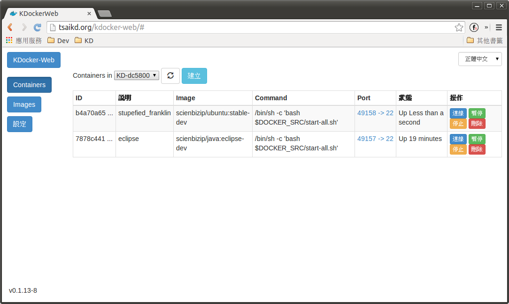
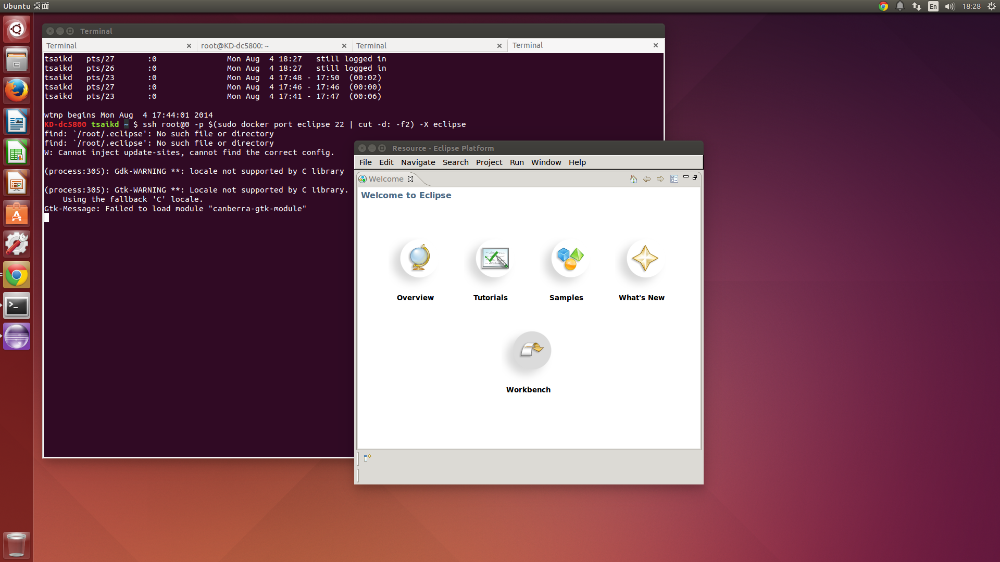

Docker eclipse on Ubuntu Desktop
4/Aug 2014
看到越來越多人在往雲端開發的方向在玩， 比較終極的做法當然就是把 Browser 變成 IDE ， 不過就目前看來， 技術上還沒有一個比較領先的做法， 只好先找比較無痛的方向來玩玩…hehehe
今天嘗試了一個新的做法， 在 Ubuntu Desktop 上面裝 docker ， 在 docker 裡面跑 eclipse 來開發， 這樣做的目的是要讓本機的開發環境不要裝太多雜七雜八的東西， 先看一下成功的畫面吧！


基本上就是先建一個 eclipse 的 container ， 跑起來之後再用 ssh 連進去執行 eclipse ， 需要 ssh 的原因是為了要把本機的 X11 forwarding 過去， 本來還有 google 到用 mount 的的辦法去達成 X11 forwarding ， 不過試了一陣子都搞不定， 只好先暫時放棄了。